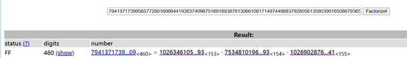
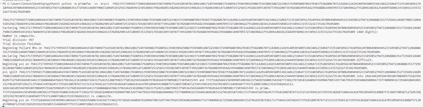
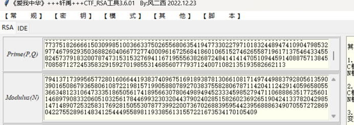

题目描述
这是一道 V&N2022 公开赛的 RSA 题目。题目给出了加密脚本（Python）以及输出的 n、d、cipher 三个值，需要解密得到 flag。
加密脚本中使用了三个素数 p、q、r，其中 p 由自定义的 getprime 函数生成（通过不断乘上随机小素数直到达到指定位数），q、r 为标准大素数。加密过程分为两步：先用 e=0x10001 对明文在模 n=pqr 下加密得到 cipher，同时额外输出了 d = invert(q², p²)。
加密脚本
from random import randint
from gmpy2 import *
from Crypto.Util.number import *
def getprime(bits):
while 1:
n = 1
while n.bit_length() < bits:
n *= next_prime(randint(1,1000))
if isPrime(n - 1):
return n - 1
m = bytes_to_long(b'flag{************************************}')
p = getprime(505)
q = getPrime(512)
r = getPrime(512)
assert m < q
n = p * q * r
e = 0x10001
d = invert(q ** 2, p ** 2)
c = pow(m, 2, r)
cipher = pow(c, e, n)
print(n)
print(d)
print(cipher)输出数据
n = 7941371739956577280160664419383740967516918938781306610817149744988379280561359039016508679365806108722198157199058807892703837558280678711420411242914059658055366348123106473335186505617418956630780649894945233345985279471106888635177256011468979083320605103256178446993230320443790240285158260236926519042413378204298514714890725325831769281505530787739922007367026883959544239568886349070557272869042275528961483412544495589811933856131557221673534170105409
d = 7515987842794170949444517202158067021118454558360145030399453487603693522695746732547224100845570119375977629070702308991221388721952258969752305904378724402002545947182529859604584400048983091861594720299791743887521228492714135449584003054386457751933095902983841246048952155097668245322664318518861440
cipher = 1618155233923718966393124032999431934705026408748451436388483012584983753140040289666712916510617403356206112730613485227084128314043665913357106301736817062412927135716281544348612150328867226515184078966397180771624148797528036548243343316501503364783092550480439749404301122277056732857399413805293899249313045684662146333448668209567898831091274930053147799756622844119463942087160062353526056879436998061803187343431081504474584816590199768034450005448200解题思路
分解 n 得到 p
注意到 getprime(505) 函数的生成方式：不断乘上 1~1000 之间的随机素数直到位数达到 505 位。这种构造使得 p-1 是许多小素数的乘积，因此可以用 Pollard's p-1 方法或其变种 Williams' p+1 方法分解 n。
使用 primefac 工具，指定 p+1 方法：
python2 -m primefac -vs -m=p+1 7941371739956577280160664419383740967516918938781306610817149744988379280561359039016508679365806108722198157199058807892703837558280678711420411242914059658055366348123106473335186505617418956630780649894945233345985279471106888635177256011468979083320605103256178446993230320443790240285158260236926519042413378204298514714890725325831769281505530787739922007367026883959544239568886349070557272869042275528961483412544495589811933856131557221673534170105409
分解得到 p：
p = 102634610559478918970860957918259981057327949366949344137104804864768237961662136189827166317524151288799657758536256924609797810164397005081733039415393
利用 d 恢复 q
已知 d = invert(q², p²)，即：
d · q² ≡ 1 (mod p²)
两边取逆元：
q² ≡ d⁻¹ (mod p²)
令 q2 = invert(d, p²)，则 q2 = q² + k·p²。通过遍历 k 对 q2 + k·p² 开平方，即可得到 q。
q2 = gmpy2.invert(d, p ** 2)
for i in range(1000000):
q = gmpy2.iroot(q2 + i * p ** 2, 2)
if q[1] == 1:
print(q[0], i)
break
q = q[0]
得到 q：
q = 77375182666615030998510036633750265568063541947733022797101832448947410904798532977467992935036882604066772774000961672568418601065152746265587196171375464334558245737918320078747315315327694116719555638268724841414147051094459140887571384570858712724535832915927019855314685607779371240071082135193582662113计算私钥并解密
得到 p、q 后，计算 r = n // p // q，得到完整 φ(n) 和私钥 D：
r = n // p // q
e = 0x10001
phi = (p - 1) * (q - 1) * (r - 1)
D = gmpy2.invert(e, phi)
c = pow(cipher, D, n)注意加密过程为 c = m² mod r，因此从 c 还需要在模 r 下开平方得到 m。这里使用 Tonelli-Shanks 算法求解二次剩余。
解密脚本
import gmpy2
from Crypto.Util.number import *
def legendre(a, p):
return pow(a, (p - 1) // 2, p)
def tonelli(n, p):
assert legendre(n, p) == 1
q = p - 1
s = 0
while q % 2 == 0:
q //= 2
s += 1
if s == 1:
return pow(n, (p + 1) // 4, p)
for z in range(2, 10000):
if p - 1 == legendre(z, p):
break
c = pow(z, q, p)
r = pow(n, (q + 1) // 2, p)
t = pow(n, q, p)
m = s
while (t - 1) % p != 0:
t2 = (t * t) % p
for i in range(1, m):
if (t2 - 1) % p == 0:
break
t2 = (t2 * t2) % p
b = pow(c, 1 << (m - i - 1), p)
r = (r * b) % p
c = (b * b) % p
t = (t * c) % p
m = i
return r
n = 7941371739956577280160664419383740967516918938781306610817149744988379280561359039016508679365806108722198157199058807892703837558280678711420411242914059658055366348123106473335186505617418956630780649894945233345985279471106888635177256011468979083320605103256178446993230320443790240285158260236926519042413378204298514714890725325831769281505530787739922007367026883959544239568886349070557272869042275528961483412544495589811933856131557221673534170105409
d = gmpy2.mpz(7515987842794170949444517202158067021118454558360145030399453487603693522695746732547224100845570119375977629070702308991221388721952258969752305904378724402002545947182529859604584400048983091861594720299791743887521228492714135449584003054386457751933095902983841246048952155097668245322664318518861440)
cipher = 1618155233923718966393124032999431934705026408748451436388483012584983753140040289666712916510617403356206112730613485227084128314043665913357106301736817062412927135716281544348612150328867226515184078966397180771624148797528036548243343316501503364783092550480439749404301122277056732857399413805293899249313045684662146333448668209567898831091274930053147799756622844119463942087160062353526056879436998061803187343431081504474584816590199768034450005448200
p = gmpy2.mpz(102634610559478918970860957918259981057327949366949344137104804864768237961662136189827166317524151288799657758536256924609797810164397005081733039415393)
q2 = gmpy2.invert(d, p ** 2)
for i in range(1000000):
q = gmpy2.iroot(q2 + i * p ** 2, 2)
if q[1] == 1:
print(q[0], i)
break
q = q[0]
r = n // p // q
e = 0x10001
phi = (p - 1) * (q - 1) * (r - 1)
D = gmpy2.invert(e, phi)
c = pow(cipher, D, n)
print(c)
m = tonelli(c, r)
print(m)
print(long_to_bytes(m))Flag
flag{fd462593-25e4-4631-a96a-0cd5c72b2d1b}